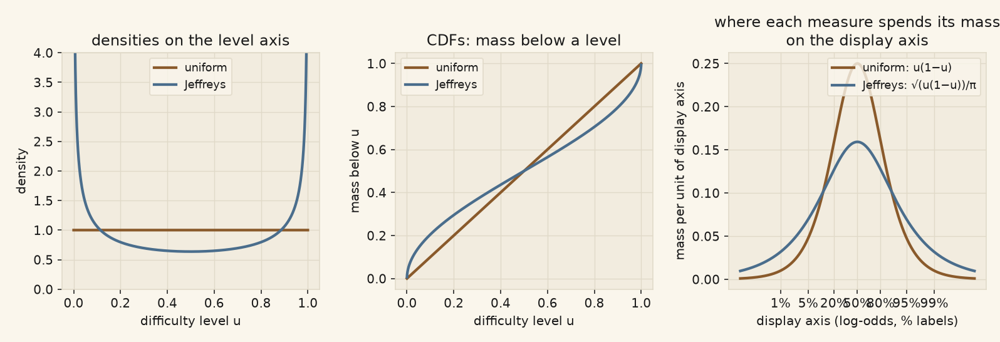

\(\nu\) is the difficulty marginal of the task law: with tasks drawn as \(T \sim \Lambda\) and the level map \(u\), \(\nu = \Lambda \circ u^{-1}\). Holding the pool's within-level composition fixed, choosing \(\nu\) pins \(\Lambda\), so this one marginal is the open choice. This note derives what each candidate means, what follows by theorem, and only then what the current data shows.
A choice of \(\nu\) is a choice of which question capability-type quantities answer.
Uniform on \([0,1]\) asks: of all difficulty levels, weighted equally, what fraction does the model handle? Level and percentile coincide; a perfectly consistent model's capability IS its threshold level.
Jeffreys, \(\mathrm{Beta}(\tfrac12,\tfrac12)\), density
$$ \frac{d\nu_J}{du} \;=\; \frac{1}{\pi\sqrt{u(1-u)}}, \qquad \nu_J\bigl([0,\varepsilon]\bigr) \;=\; \frac{2}{\pi}\arcsin\sqrt{\varepsilon}, $$
asks: across difficulty written in ANY coordinate, what fraction does the model handle? It is the unique reparametrization-invariant reference measure for a Bernoulli rate: "uniform" without having to say uniform-in-what. Equivalently it is the uniform measure in the angle coordinate \(\varphi = \tfrac{2}{\pi}\arcsin\sqrt{u}\).

Left: densities on the level axis. Jeffreys puts weight \(\tfrac{2}{\pi} \approx 0.64\) at the middle and diverges at the ends. Middle: the CDFs, Jeffreys' arcsine S-curve against the uniform diagonal. Right: the view that matters for reading our figures: mass per unit of the stretched display axis. Uniform concentrates its attention in the middle of the display (\(u(1-u)\), the logistic bell); Jeffreys spreads it wider (\(\sqrt{u(1-u)}/\pi\)), spending real mass where reliability and solvability live. A flat line on this axis is not an option for anyone: flat over an infinite line has infinite total mass, so no probability distribution is uniform on the stretched axis. Every admissible \(\nu\) must decay in the tails, and the choice of \(\nu\) is, on this axis, a choice of decay rate: uniform-in-\(u\) decays like \(e^{-\lvert d\rvert}\) (interest in harder work halves every 0.7 steps of the axis units), Jeffreys like \(e^{-\lvert d\rvert/2}\) (halves every ~1.4, twice as patient with the tails).
Uniform: exactly \(\varepsilon\), linear. Jeffreys: \(\tfrac{2}{\pi}\arcsin\sqrt{\varepsilon} \approx \tfrac{2}{\pi}\sqrt{\varepsilon}\), square root, from \(\arcsin x \approx x\) at small \(x\). The comparison:
| below level | uniform | Jeffreys |
|---|---|---|
| 5% | 5% | 14.4% |
| 1% | 1% | 6.4% |
| 0.1% | 0.1% | 2.0% |
| 0.01% | 0.01% | 0.64% |
So yes: substantial. The square-root law is the whole character of the Jeffreys distribution in one line: its interest in ever-more-extreme tasks never becomes negligible. Two percent of its question is about tasks only one attempt in a thousand fails: levels at which the notion "the population fails u of the time" is barely realizable by any finite roster. The uniform distribution's interest in the same region vanishes linearly, so a finite pool can essentially exhaust its question. This single derivation generates the identifiability facts in the data section below; they are not separate phenomena.
By theorem 2, nothing at all for: strict boundaries, the ½ anchor, the decomposition, per-task lottery statements. What remains on the table: the meaning and value of capability (which threshold clock), the cumulative boundary readings (they average over the drawn workload, so they inherit \(\nu\)), contested-mass levels and ordering, and the identifiability of it all against a finite pool, where the √ε law bites Jeffreys and spares uniform.
Frame 430 tasks / 58 models, membership
c3f08ea1a903; regenerate with
analysis/battery/derive_jeffreys.py. The pool leaves 6.49% of the
uniform question unidentified versus 20.6% of the Jeffreys question
(the √ε law meeting a real pool). These two shares are edge statistics: the covered span is set by the easiest and the hardest task in the frame, so one task entering or leaving at either end moves them by several points, and they describe the frame's edges rather than the pool as a whole. Capability's ordering is
essentially distribution-free (rank correlation 0.999, largest move 2 of
58); values shift by a few probability points. The strict-boundary
invariance holds exactly (largest difference 0.00 across models).
Contested mass is where the distributions genuinely disagree: rank agreement
0.953 with moves up to 18 places, and the disagreement follows the
derived mechanism: models whose contested band sits mid-spectrum
shrink most under Jeffreys, since that is where its density is
lowest.
Jeffreys asks the coordinate-free question and measures every part of it equally well; but a fixed fraction of that question, shrinking only like \(\sqrt{\varepsilon}\), is about tasks no finite pool can hold. Uniform asks a coordinate-bound question a real pool can essentially exhaust, and pays for it by having its meaning tied to the level coordinate. Both are legitimate declared choices; the decision is \(\nu\)'s maintainers'.